Префектура Киото · Киото · еда
Завтрак в Киото: рис из глиняного котелка, суши как сладости, удон с пяти утра и карри у замка
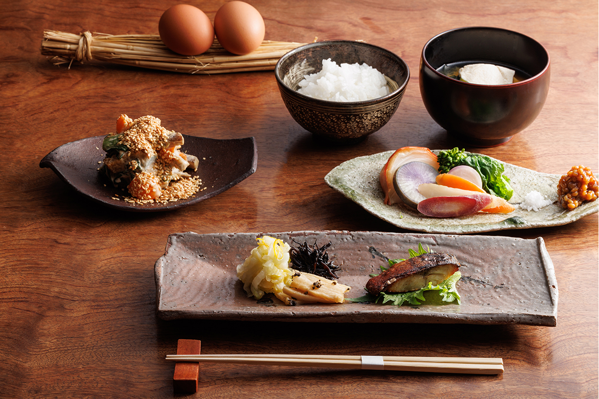
Киото снова и снова притягивает путешественников, и день здесь стоит начинать за правильным столом. Вот семь адресов на утро: от завтрака под крылом старого рётэя до суши, удона, рамэна, карри и горячих оладий.
Японский завтрак
Tan: рис, ради которого просят добавки
Вдоль реки Сиракава покачиваются ивы, и этот уголок как будто сошёл со старых гравюр. Здесь в 2016 году знаменитый рётэй Wakuden открыл Tan, свою «маленькую кухню». Корни Wakuden на полуострове Танго, на севере префектуры Киото. Оттуда сюда везут продукты, и иероглиф «тан» в названии означает искренность, с которой их хотят донести до гостя.
Днём в Tan подают недорогие, но очень достойные блюда, например говядину на рисе с большим количеством сансё, японского перца. Вечером можно не спеша заказывать по одному блюду: жареное на углях, тэмпуру. А по пятницам, субботам и воскресеньям здесь с утра кормят завтраком, чтобы гости, как говорят в ресторане, начинали день здоровыми и телом, и душой.
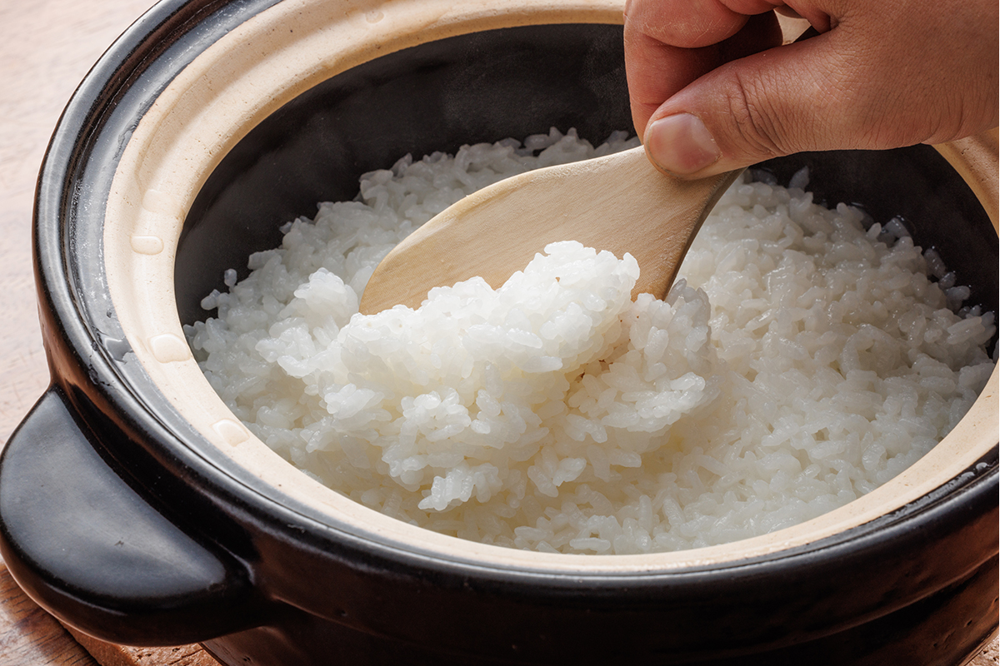
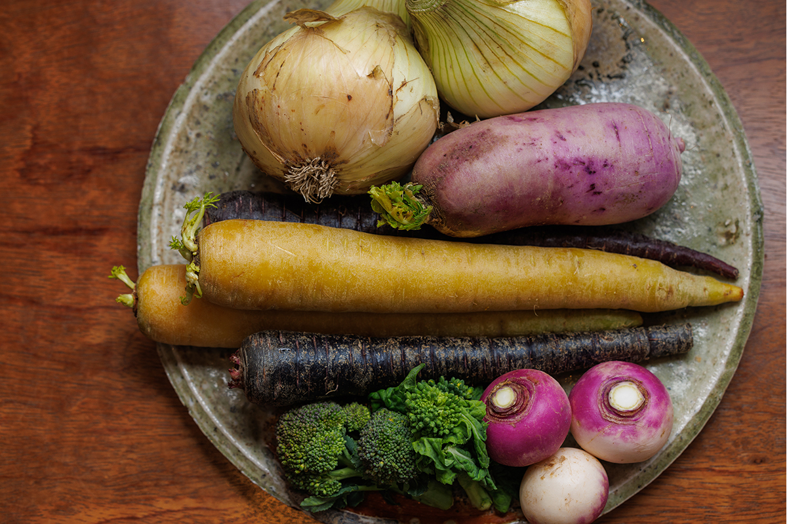
Скумбрию хэсико, засоленную ненадолго, жарят на углях до аромата. Сезонные овощи готовят на пару и подают с солью и пастой мороми мисо. Блюда простые на вид и тонкие на вкус, но главное здесь всё же рис. Его варят в глиняном котелке точно к началу завтрака, и гостей встречает пар с мягким ароматом. Первую чашку стоит съесть просто так, чтобы почувствовать чистую сладость, потом с закусками. Когда она пустеет, вам ненавязчиво предложат добавку. Для второй чашки рекомендуем рис с сырым яйцом: густой желток наполняет вкусом весь рот, и улыбку сдержать трудно.
«В среднем гости съедают две-три чашки, а кто-то и четыре-пять»
управляющий Tan
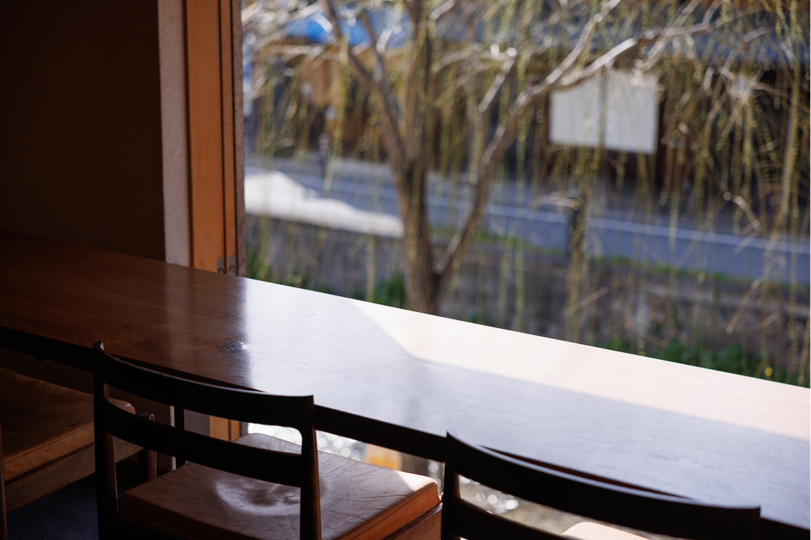
На первом этаже стоит большой обеденный стол и открытая кухня. После еды гости поднимаются на второй этаж, в гостиную, обставленную со вкусом: там уютно, как дома у близкого друга. С чашкой кофе в руках легко поверить, что день будет хорошим.
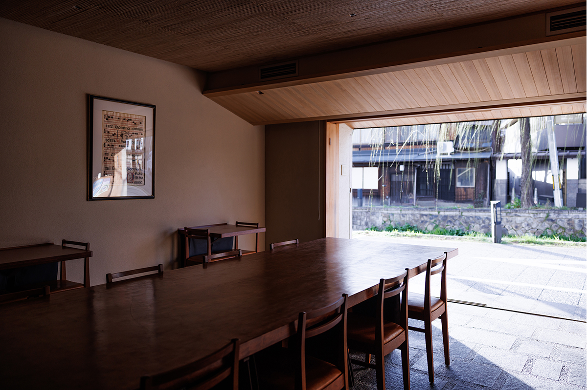
Завтрак в Tan стоит 3 300 иен (2026), к нему подают кофе или апельсиновый сок. С мая 2025 года его готовят только по пятницам, субботам и воскресеньям.
Tan
- Адрес
- префектура Киото, Киото, район Хигасияма, Гокэн-тё, 106-13 (Сандзё-дори, к югу от моста Сиракава-баси, восточная сторона)
- Телефон
- +81 75-533-7744
- Часы работы
- завтрак только в пятницу и субботу с 9:00, в воскресенье с 8:00 и с 9:00 (две смены); обед 12:00–14:45 (последний заказ 14:00), ужин 18:00–22:00 (последний заказ 21:00)
- Выходные
- понедельник (если праздник, то вторник); на следующий день после выходного завтрака нет
- Цены / Вход
- завтрак 3 300 иен (кофе или апельсиновый сок), по записи
Суши
Kashiwai: суши в духе киотских сладостей
На улице Китаяма, к северу от Киотского ботанического сада, много лет работал магазин посуды, который любили за хороший вкус. Его хозяйка продавала прежде всего посуду для повседневного стола, и еда интересовала её не меньше: вместе с мужем она постоянно ходила по известным ресторанам. Постоянные покупатели из других городов доверяли её вкусу и, приезжая в Киото, стали просить её накормить их. Так появился Kashiwai. В 2021 году ресторан переехал на нынешнее место, но формула осталась прежней: здесь наслаждаются и посудой, и едой. Открывается он в 9:00, чтобы те, кто утром приехал в Киото на синкансэне, могли начать день с киотской еды.
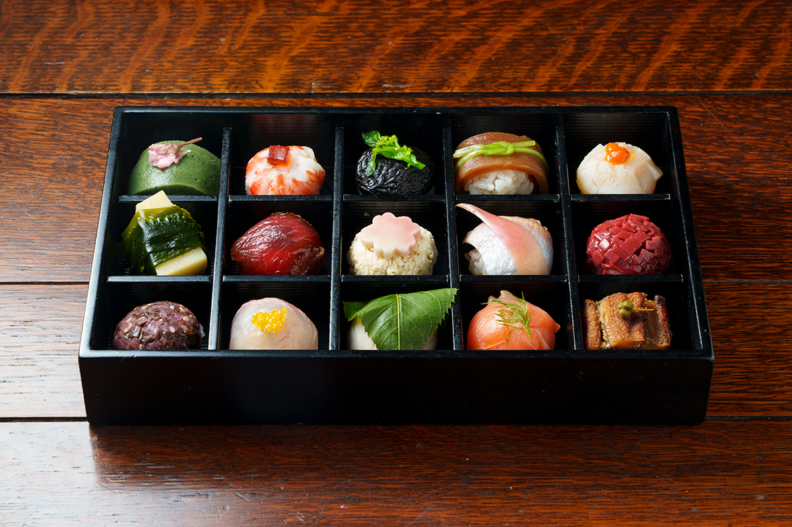
Маленькие, на один укус суши здесь называют цумами-суши, и идея их пришла из киотских сладостей. Изысканные дзё-нама-гаси на витринах кондитерских полны японского чувства красоты, и хозяйка передаёт тот же мир в суши. Например, суши с сибадзукэ, маринованными овощами из Охары, сделаны по образцу сладости кинтон: шарик бобовой пасты вручную обваливают в тонкой крошке из пасты. Здесь шарик риса так же покрывают мелко рубленными сибадзукэ. Разноцветные суши лежат в чёрном лакированном ящике с перегородками, и в этом тоже виден глаз человека, который всю жизнь выбирал посуду.
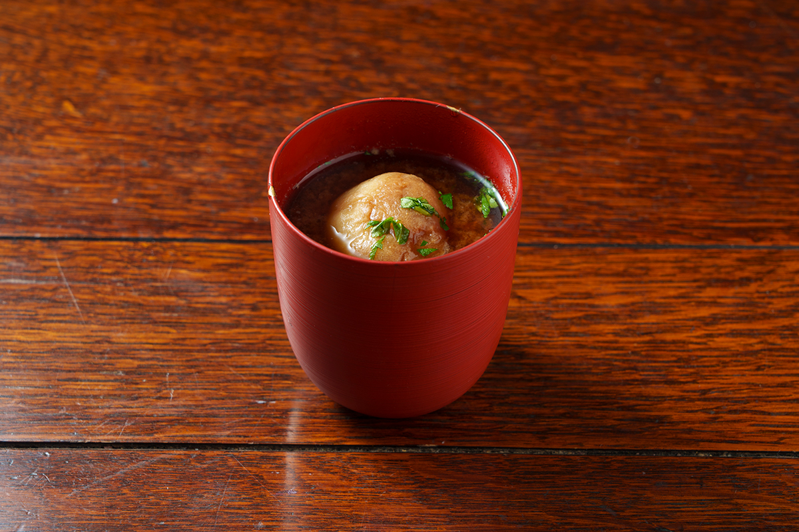
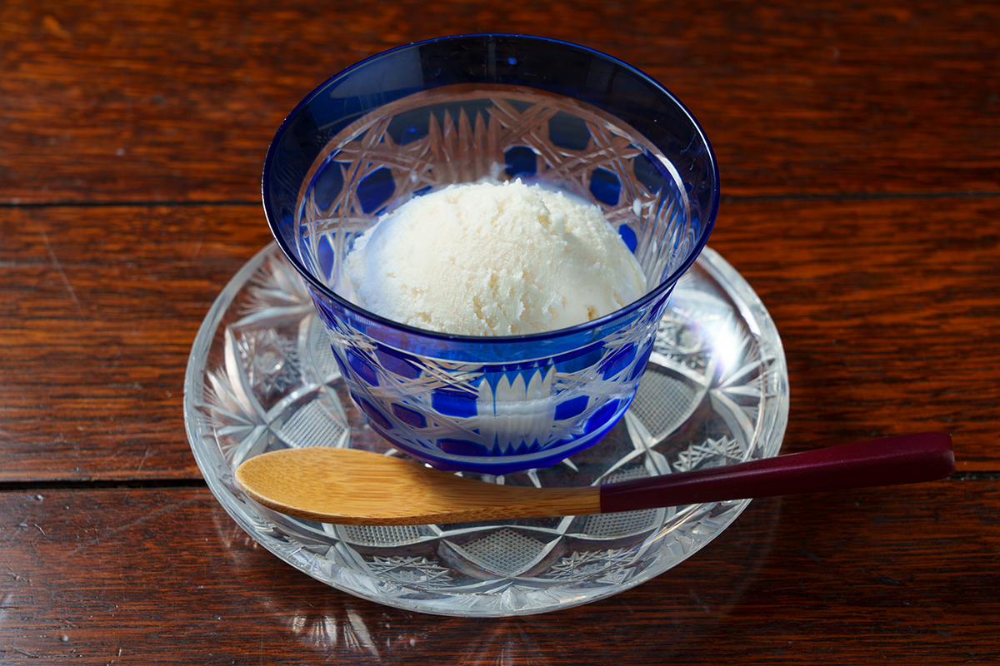
Меню меняется шесть раз в год: весной, в начале лета, летом, в начале осени, осенью и зимой. Хозяйке помогает дочь. Суши бывают по 10 и по 15 штук, к ним всегда суп и десерт. Есть и другой завтрак: сет «Кё-но отануки-сан» с закусками на маленьких тарелочках. Его главное блюдо это рис с начинкой, завёрнутый в киотскую юбу, пенку соевого молока. Цумами-суши можно взять с собой, и тогда вместо суши с сибадзукэ в ящик кладут сезонную сладость.
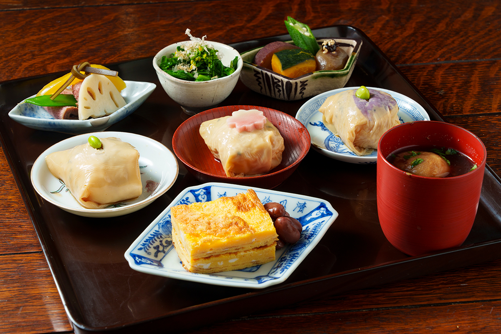
Kashiwai
- Адрес
- префектура Киото, Киото, район Кита, Кояма Симоутикавара-тё, 3-3
- Телефон
- +81 75-491-7056
- Часы работы
- завтрак 9:00–10:30, обед 11:30–13:30, еда с собой до 17:00
- Выходные
- среда, 2-й и 4-й вторник месяца
- Цены / Вход
- цумами-суши 15 штук 3 630 иен, 10 штук 2 640 иен (с супом и десертом), сет «Кё-но отануки-сан» 1 650 иен
Удон
«Хаяокитэй удон»: лапшичная, которая открывается в пять утра
Хозяин лапшичной фабрики недалеко от святилища Хэйан-дзингу хотел не только делать лапшу, но и сам кормить ею людей. В 2014 году он открыл при фабрике закусочную: в гараже поставили стойку в духе уличного ларька и несколько столиков. Необычный вид и работа с пяти утра постепенно сделали место известным, и теперь некоторые приходят сюда завтракать перед работой каждый день.
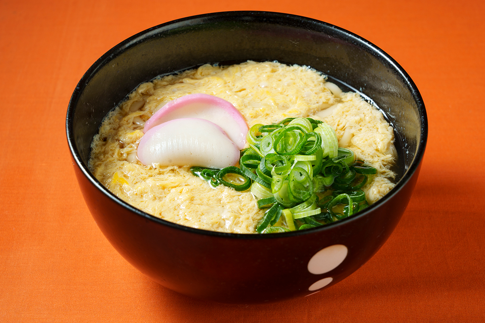
Фабрику основали в 1924 году, и вместе с умением делать лапшу здесь передавали рецепт бульона. Даси из комбу с острова Рисири и стружки бонито хвалят даже повара ресторанов. На этом бульоне готовят самое популярное блюдо, «мамин удон». Для хозяина это вкус из детства: когда он готовился к вступительным экзаменам, занятая торговлей мать успевала сварить ему только удон с яйцом. Его он и повторил.
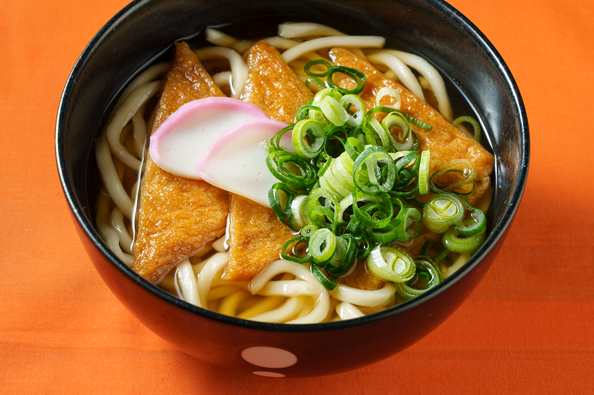
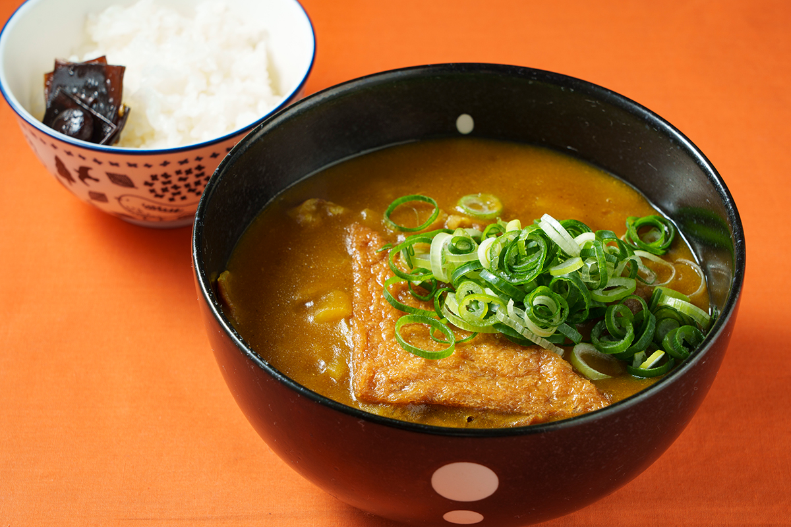
С первых дней меню выросло: появились удон сиппоку и удон в деревянной кадке, а главной гордостью лапшичной стал карри-удон. Он острее, чем ожидаешь, и будит лучше кофе.
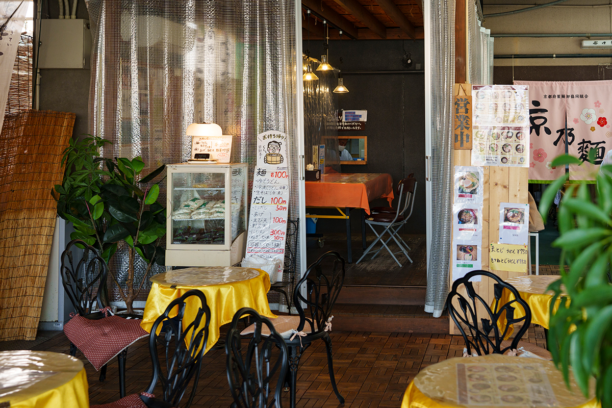
«Хаяокитэй удон»
- Адрес
- префектура Киото, Киото, район Сакё, Сёгоин Рэнгэдзо-тё, 9
- Телефон
- +81 75-761-0091
- Часы работы
- 5:00–13:00
- Выходные
- среда
- Цены / Вход
- «мамин удон» 600 иен, удон с абураагэ 700 иен, карри-удон с рисом 800 иен, удон с тэмпурой 700 иен, удон сиппоку 700 иен, добавка лапши 100 иен
Рамэн
«Тори-соба 223»: солёный рамэн на курином бульоне
Хозяин этой раменной работает в форме, в которой его легко принять за повара французского ресторана, и всерьёз хочет сделать лучший в Японии рамэн на соли. Помещение бывшего заведения рядом с Киотским ботаническим садом в Симогамо он светло переделал и открыл здесь раменную в августе 2020 года. Есть постоянные гости, которые приходят шесть раз в неделю.
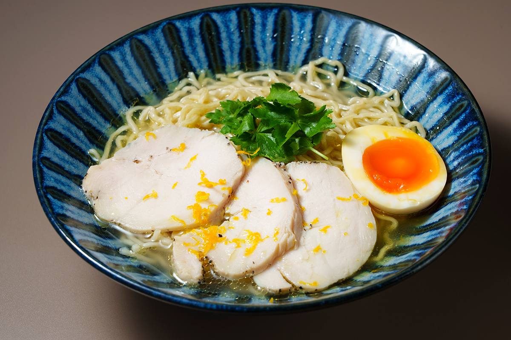
Насколько серьёзны его намерения, видно по пути. За плечами у него 11 лет в известной раменной, и всё же, чтобы найти собственный вкус, он пошёл учиться французской кухне. Главное, что он оттуда вынес, это умение делать солевую заправку тарэ, сердце супа. По его словам, так решилась задача, над которой он долго бился безуспешно. Итальянские названия блюд, «Миланский рассвет» и «Флорентийский закат», отчасти придуманы, чтобы запомниться. В 2023 году до 10:30 к рамэну за 100 иен можно было добавить любое блюдо из дополнительного меню.
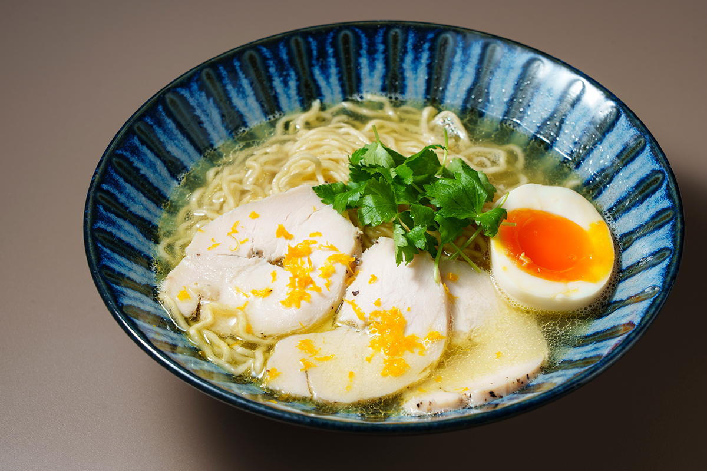
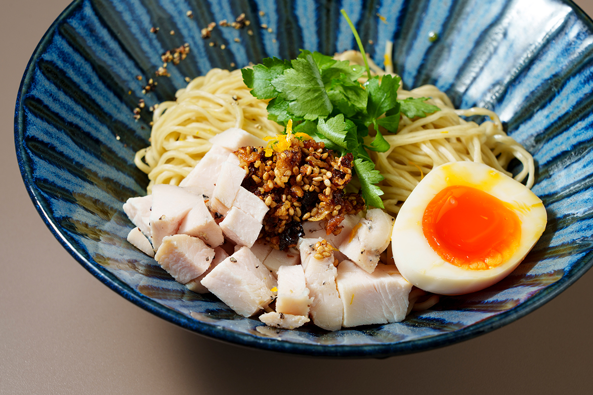
«Тори-соба 223»
- Адрес
- префектура Киото, Киото, район Сакё, Симогамо Нисинакарагитё, 70-2
- Часы работы
- 9:00–15:00
- Выходные
- понедельник
- Цены / Вход
- «Миланский рассвет» 1 000 иен, «Флорентийский закат» 1 000 иен, «Первая любовь Джироламо» 950 иен, рис с курицей 400 иен, рис с куриной ветчиной 500 иен (с рамэном за полцены), рис в конце 250 иен
Карри
«Кисса Тироль»: старое кафе у замка Нидзё
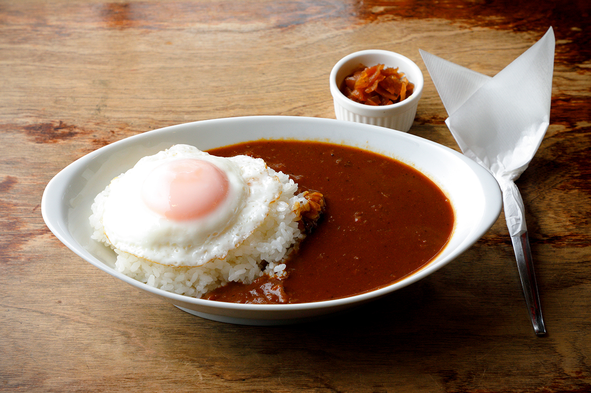
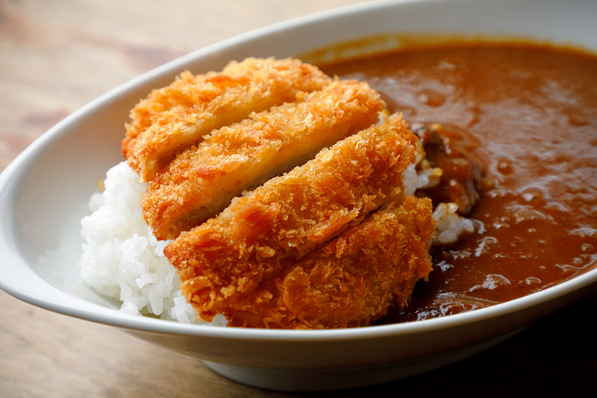
Это старое кафе-кисса у самого замка Нидзё, и к 2023 году его любили уже 55 лет. В зале с деревенским уютом встречают и соседей, и туристов.
Утром здесь есть обычные тосты и варёные яйца, но не меньше спрашивают фирменный карри с рисом. Хозяин, второе поколение семьи, рассказывает, что подавать его с самого открытия начали по просьбам гостей. Соус готовят три дня, и мясо с овощами в нём полностью растворяются. Специи дают аромату чёткие очертания, но острым карри не назовёшь: вкус мягкий, а щедрая горка риса исчезает в один миг.
Добавок много. Одних яиц три вида: глазунья, варёное и болтунья. Котлета тонкацу обычная, 80 г, или толстая, 120 г, а ещё есть крокеты, котлеты из ветчины и рубленого мяса. Здесь и встретят по-доброму, и накормят так, что сил хватит до вечера.
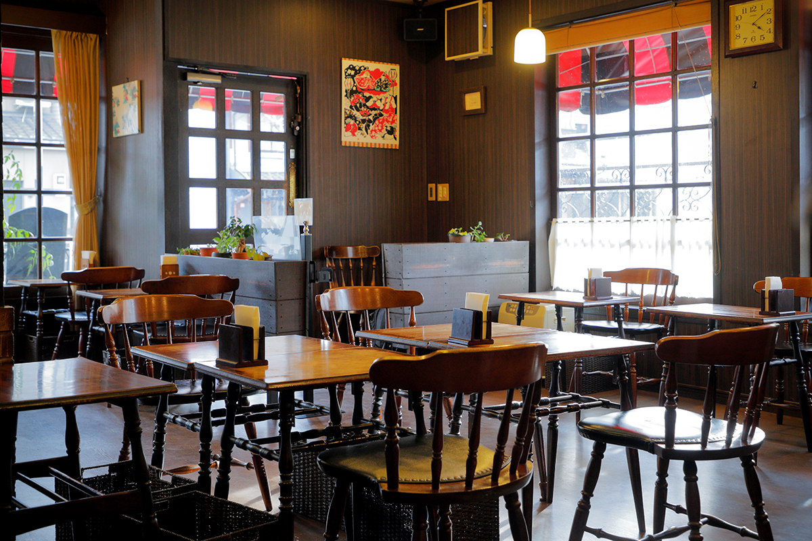
«Кисса Тироль»
- Адрес
- префектура Киото, Киото, район Накагё, Мондзэн-тё, 539-3
- Телефон
- +81 75-821-3031
- Часы работы
- 8:00–16:00 (последний заказ 15:30)
- Выходные
- воскресенье, праздники
- Цены / Вход
- карри с глазуньей 900 иен, карри с котлетой 980 иен, тост с маслом 300 иен, сэндвич с яйцом 800 иен, кофе 480 иен, кофе с молоком 550 иен
Специи
SPICE GATE: завтрак с карри по-киотски
SPICE GATE открылся в мае 2022 года как младший брат ресторана бирьяни India Gate. Он стоит в паре шагов от Сидзё-Каварамати, самого оживлённого района Киото, и предлагает «завтрак со специями по-киотски».
«В Киото много гостиниц, а мест, где можно позавтракать, всё ещё мало. Пусть наш завтрак станет ещё одним вариантом»
повар SPICE GATE
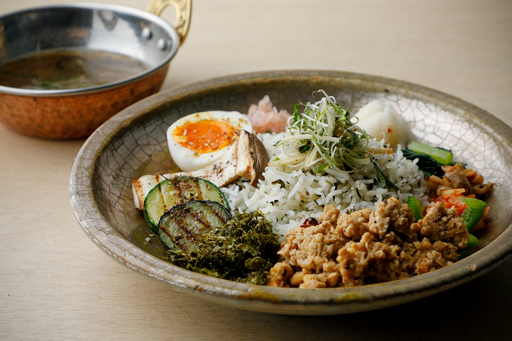
Рис басмати, как в главном ресторане, варят с зелёным чаем сэнтя от чайного дома из Гиона: он даёт свежий аромат и глубину вкуса, похожую на бульон из комбу. Куриное кима-карри, карри на даси и щедрые закуски можно добавлять к рису понемногу, а можно смело перемешать всё сразу, и каждый раз вкус будет другим. Специи здесь работают на аромат, а не на остроту, масла немного, так что такой завтрак легко и мягко будит желудок.
При ресторане работает магазин специй: понравившиеся специи и травы можно сразу купить.
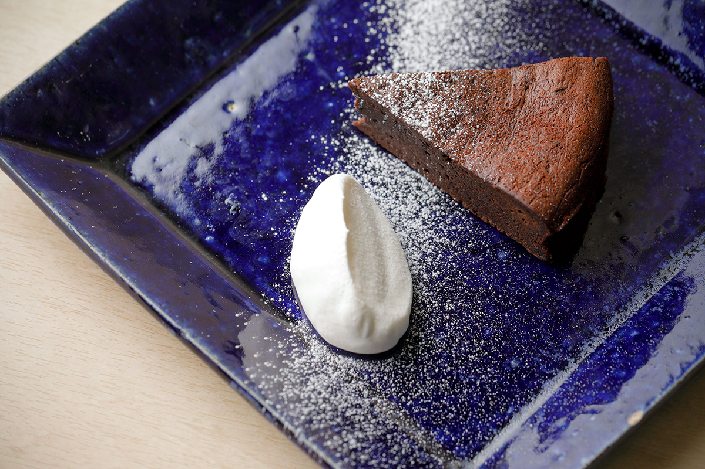
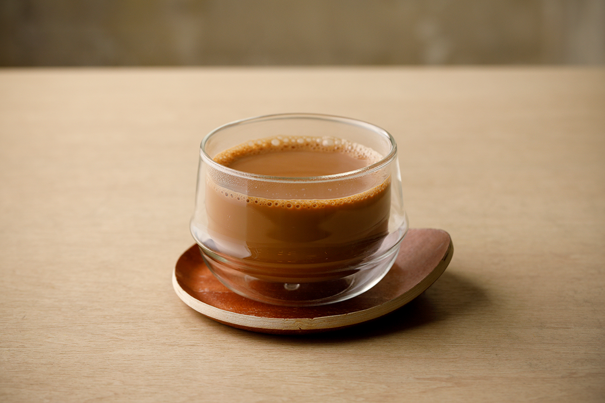
SPICE GATE
- Адрес
- префектура Киото, Киото, район Симогё, Эбисуно-тё, 546, здание Shikisai Teramachi, 2-й этаж
- Телефон
- +81 75-741-7554
- Часы работы
- завтрак 7:30–11:00, обед 11:30–16:00 (последний заказ)
- Выходные
- нерегулярно
- Цены / Вход
- завтрак со специями по-киотски 1 200 иен, десертный сет +950 иен (с кофе или травяным чаем), шоколад с магао 650 иен, горячий чай масала +500 иен
Сладкое
«Окаси Цукуру»: оладьи на завтрак в Нисидзине
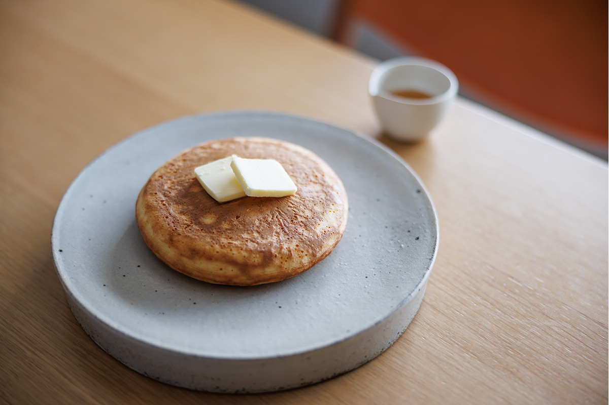
Кафе открылось в 2021 году в Нисидзине, не в самом центре, но и недалеко от него. Здесь всего шесть мест за стойкой, где подают завтраки и полдник, и лист ожидания у входа заполняется рано.
Хозяин около 20 лет готовил в итальянских ресторанах, а открывая своё дело, вернулся к тому, о чём мечтал с самого начала, к кондитерскому искусству. Он готовит на кухне-острове прямо на глазах у гостей. Самое популярное на завтрак это хоттокэки, японские оладьи, и начинаются они с просеивания муки. Пышная оладья тает во рту, а нежный вкус долго не отпускает.
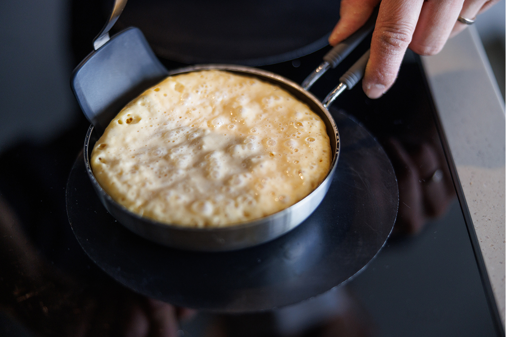
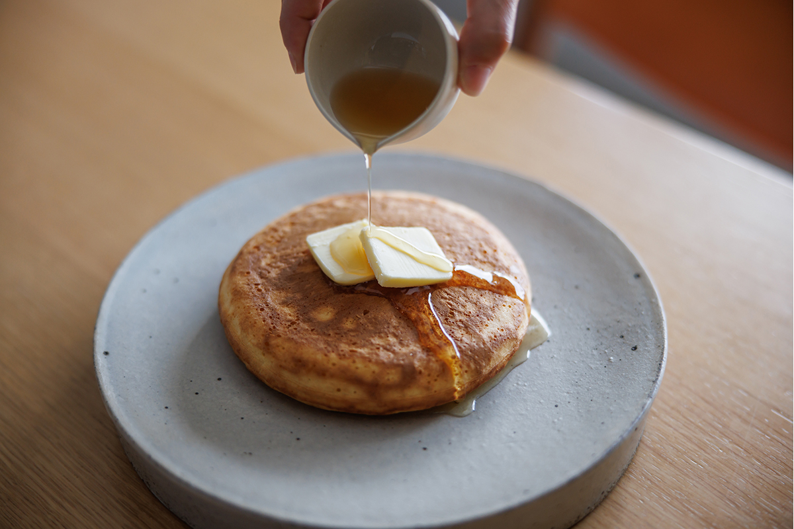
«Сладкое с утра успокаивает и придаёт сил, правда?»
хозяйка кафе, которая встречает гостей
Для тех, кто сладкое не очень любит, например для мужчин, пришедших в паре, есть солёные блюда: открытый тост с яйцом и хамоном и другие. Тёплый зал устроен в перестроенном киотском доме матия, и в нём хочется задержаться над свежей выпечкой.
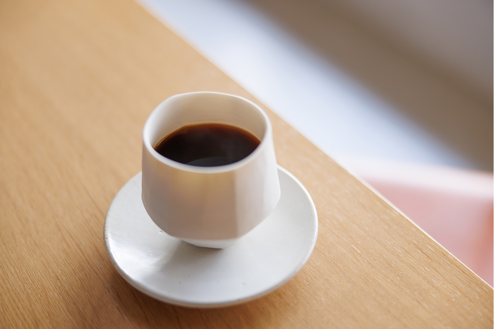
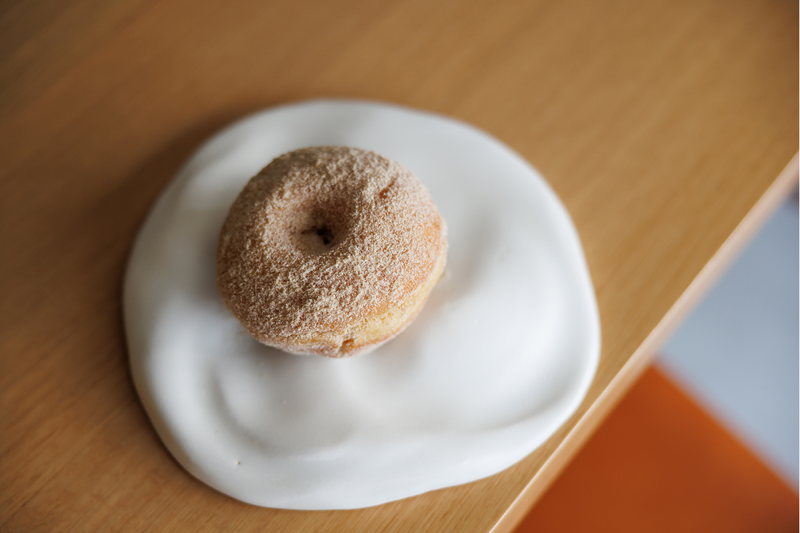
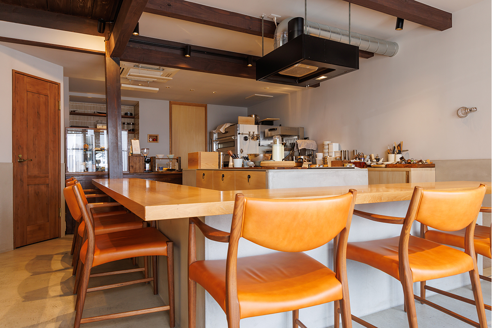
«Окаси Цукуру»
- Адрес
- префектура Киото, Киото, район Камигё, Дзуйкоинмаэ-тё, 36-2
- Телефон
- +81 75-205-3878
- Часы работы
- завтрак 8:30–11:00, полдник 13:00–17:00, до окончания выпечки
- Выходные
- понедельник, вторник, иногда нерегулярно
- Цены / Вход
- хоттокэки 860 иен, пончик 330 иен, открытый тост с яйцом и хамоном 840 иен, кофе 550 иен, чай 550 иен
Фото: Садахо Найто, Такуя Осима, Макото Ито.